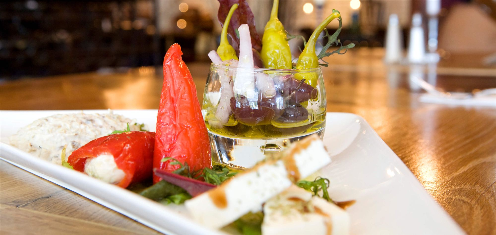
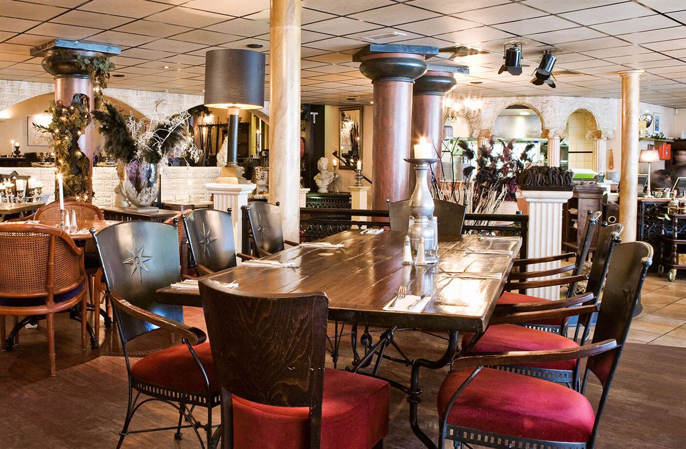

Handelskade 83-85, Nieuwegein
Minos Pallas
Wees te gast in het paleis van koning Minos. Griekse specialiteiten van de grill, uit de oven en uit de pan, elke dag vanaf 16:00 uur.

Ons restaurant
In ons restaurant hebben wij getracht sfeerbepalende elementen van het paleis van Minos te verwerken.
De vloermozaïeken, de schitterende minoïsche muurschilderingen, het labyrint: alles doet u denken aan het paleis van deze heerser van Knossos. Wij begeleiden u door de culinaire gangen van het labyrint.
Eenmaal hier geweest en u zult voor altijd de weg weten. In een sfeervol, romantisch restaurant maakt u een culinaire ontdekkingsreis; eten en sfeer zijn onverbrekelijk met elkaar verbonden.
- Open
- Maandag t/m zondag vanaf 16:00 uur tot sluit
- Reserveren
- 030 608 11 28, via de website of persoonlijk in het restaurant
25 & 26 december 2026
Kerst bij Minos Pallas
Kom deze kerst genieten van overheerlijke Griekse gerechten in feeststemming, met livemuziek en een buikdanseres, op 1e of 2e Kerstdag.
Kies uw tijd
Tijdens de kerstdagen werken we met twee shifts:
of
Bekijk de volledige kerstkaart (prijzen gelden alleen op 25 en 26 december)
Koude voorgerechten
- Tzatziki€ 12,75Geklopte yoghurt met komkommer, knoflook en kruiden.
- Carpaccio moscharaki€ 18,00Carpaccio van ossenhaas.
- Pikilia€ 19,75Een combinatie van koude en warme voorgerechten.
- Tapenades€ 13,35Keur van Griekse tapenades.
Warme voorgerechten
- Keftedakia€ 14,40Gehaktballetjes in rode saus met feta en uitjes.
- Feta saganaki€ 15,95Gepaneerde en gebakken schapenkaas met honing.
- Soupa tis imeras€ 9,00Soep van de dag.
- Midia saganaki€ 15,95Gebakken mosselen met uien, feta en knoflook (keukenspecialiteit).
- Kalamaria tiganita€ 15,95Gebakken inktvisringen met knoflooksaus.
- Midia tiganita€ 15,20Gepaneerde mosselen met knoflooksaus.
Vlees van de grill
Geserveerd met rijst, frites en koolsalade.
- Diafora kreata scharas€ 32,35Mix grill met souvlaki, suzuki, frenchrack, gyros, kipfilet en tzatziki.
- Paidakia€ 35,954 lamskoteletten (french racks), gyros en tzatziki.
- Bifteki€ 25,95Gekruid gehakt gevuld met fetakaas, gyros en pita.
- Souvlaki ossenhaas€ 35,45Spies van ossenhaas met gebakken groente en pepersaus.
- Souvlaki kip€ 28,20Spies van kipfilet, gyros en tzatziki.
- Souvlaki varkenshaas€ 29,75Spies van varkenshaas, gyros en tzatziki.
- Plateau Minos Pallas€ 35,25 p.p.2 of meer personen. Suzuki, souvlaki, french racks, gyros en tzatziki, met rijst, frites en Griekse boerensalade.
Ovengerechten
Geserveerd met rijst, frites en koolsalade.
- Arnaki stifado€ 33,20Stoofschotel op boerenwijze met lamsschouder, kleine sjalotjes en aardappel uit de oven.
- Arnaki me patates fournou€ 32,20Lamsschouder met aardappeltjes en knoflook uit de oven.
- Mousaka€ 29,20Traditionele Griekse ovenschotel met laagjes aardappel, aubergine en gekruid gehakt, afgedekt met bechamelsaus.
Visgerechten
Geserveerd met rijst, frites en koolsalade.
- Kalamaria€ 30,45Gefrituurde inktvisringen met knoflooksaus.
- Lavraki€ 31,45Zeebaarsfilet uit de pan met groenten en knoflooksaus.
- Solomos scharas€ 31,20Een heerlijke zalmfilet met knoflooksaus.
- Thalassino piato€ 31,30Een visschotel met inktvis, mosselen en gamba’s.
Vegetarisch
- Mousaka vegetarisch€ 26,20Ovenschotel met aardappelen, aubergine, courgette, tomaat en diverse groenten, afgedekt met bechamelsaus.
- Briami€ 25,25Ovenschotel met tomaten, aubergine, courgette, wortel, paprika, aardappel, knoflook en peterselie.
Pangerecht
- O mezes tou bekri€ 32,20Gerecht van de dronken man: varkenshaas met champignon, paprika en uien in licht pikante rode saus, afgeblust met Metaxa 5.
Kindermenu’s
- Artemis€ 16,10Kipfilet met gyros, frites en mayonaise.
- Appolo€ 16,10Souvlaki met gyros, frites en mayonaise.
- Odysseus€ 16,10Gyros met frites en mayonaise.
- Hercules€ 16,10Gehaktballetjes in tomatensaus met gyros, frites en mayonaise.
Bijgerechten en sauzen
- Rizi€ 4,35Rijst in tomatensaus.
- Patates fournou lemonates€ 6,10Aardappeltjes uit de oven met knoflook, oregano en citroen.
- Patates€ 4,75Extra frites.
- Gigantes€ 4,50Grote witte bonen.
- Sauzen€ 3,10Kafteri (pikant rood), skordo (knoflook), manitaria (champignon), piperi (peper) of cocktail.
- Tzatziki extra€ 4,50Overheerlijke geklopte Griekse yoghurt.
Desserts
- Dame blanche€ 10,50Vanille ijs met chocoladesaus en slagroom.
- Cheesecake€ 10,50Romige, huisgemaakte cheesecake op een krokante koekjesbodem, met een bolletje ijs.
- Huisgemaakte baklava€ 11,50Flinterdun filodeeg gevuld met walnoten, in een lichte suikersiroop, met ijs.
- Griekse yoghurt€ 10,50Yoghurt met walnoten en honing.
- Kinderijsje€ 6,75Kinderijsje met verrassing.
Reserveer een tafel
Reserveren kan op de website, telefonisch via 030 608 11 28 of uiteraard persoonlijk in ons restaurant. Zijn er opmerkingen of vragen? Neem dan telefonisch contact op.
Betalen
Wij accepteren pin, creditcards, contant, de nationale diner cheque en onze eigen cadeaubonnen.
Route & contact
Minos PallasHandelskade 83-85
3434 BE Nieuwegein
030 608 11 28
info@minospallas.nl
Openingstijden
Maandag t/m zondag zijn wij geopend vanaf 16:00 uur tot sluit.
Met de auto
In de nabijheid van het restaurant kunt u parkeren.
Vanuit Utrecht / Amsterdam (A2)
Volg de A2 richting Vianen tot aan afslag 10 Nieuwegein-Zuid. Onder aan de afslag, bij het stoplicht linksaf. Volg via een tunnel onder de A2 de Zandveldseweg tot aan het vierde stoplicht. Ga rechtsaf de Henri Dunantlaan op en volg deze weg richting de Handelskade.
Vanuit Arnhem (A12)
Volg de A12 richting Utrecht tot aan knooppunt Oudenrijn, daarna richting Vianen (A2) tot aan afslag 10 Nieuwegein-Zuid. Onder aan de afslag, bij het stoplicht linksaf. Volg via een tunnel onder de A2 de Zandveldseweg tot aan het vierde stoplicht. Ga rechtsaf de Henri Dunantlaan op en volg deze weg richting de Handelskade.
Vanuit Amersfoort (A28)
Volg de A28 richting Utrecht, dan de A27 richting Utrecht-Den Haag tot knooppunt Lunetten, vervolgens de A12 richting Den Haag tot aan knooppunt Oudenrijn, daarna de A2 richting Vianen-'s-Hertogenbosch tot afslag 10 Nieuwegein-Zuid. Onder aan de afslag, bij het stoplicht linksaf. Volg via een tunnel onder de A2 de Zandveldseweg tot aan het vierde stoplicht. Ga rechtsaf de Henri Dunantlaan op en volg deze weg richting de Handelskade.
Vanuit Den Haag / Woerden (A12 / A2)
Volg de A12 richting Utrecht-Arnhem tot aan knooppunt Oudenrijn, daarna de A2 richting Vianen-'s-Hertogenbosch tot afslag 10 Nieuwegein-Zuid. Onder aan de afslag, bij het stoplicht linksaf. Volg via een tunnel onder de A2 de Zandveldseweg tot aan het vierde stoplicht. Ga rechtsaf de Henri Dunantlaan op en volg deze weg richting de Handelskade.
Vanuit 's-Hertogenbosch (A2)
Volg de A2 richting Utrecht / Amsterdam tot afslag 10 Nieuwegein-Zuid. Onder aan de afslag, bij het stoplicht linksaf de Zandveldseweg op. Volg deze weg tot aan het derde stoplicht. Ga rechtsaf de Henri Dunantlaan op en volg deze weg tot aan de Handelskade.
Vanuit Gorinchem (A27 / A2)
Volg de A27 tot aan knooppunt Everdingen. Volg de richting Amsterdam / Utrecht via de A2 tot afslag 10 Nieuwegein-Zuid. Onder aan de afslag, bij het stoplicht linksaf de Zandveldseweg op. Volg deze weg tot aan het derde stoplicht. Ga rechtsaf de Henri Dunantlaan op en volg deze weg tot aan de Handelskade.
Met het openbaar vervoer
Trein en sneltram
Met de trein naar Utrecht Centraal, daarna verder met de sneltram, bus of taxi. Sneltram Utrecht Centraal - Nieuwegein-Zuid: uitstappen bij de halte Wiersdijk of Nieuwegein-Zuid.
Bus vanuit Utrecht
Buslijn 116: uitstappen in Nieuwegein bij de halte 't Veerhuis of Waterlelie. Buslijn 117: uitstappen bij de halte Koninginnenlaan of Berkstraat.
Bus vanuit Vianen / Vianen Lekbrug
Afhankelijk van buslijn 116 of 117: uitstappen in Nieuwegein bij de halte 't Veerhuis, Waterlelie, Berkstraat of Koninginnenlaan.